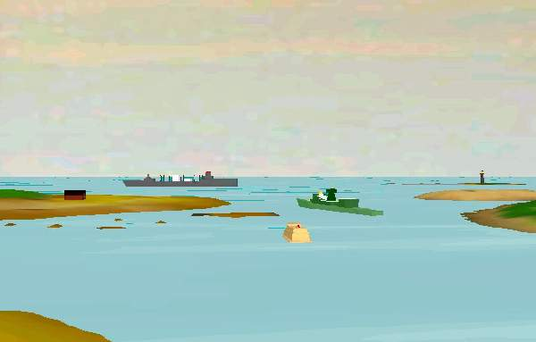
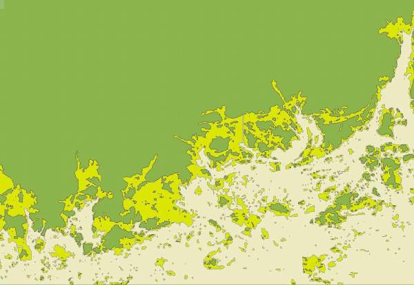

NavSim – a Shipping Simulator: Part I
Vector 18:1, page 57
This paper was previously published in the FinnAPL newsletter, having been presented at the Finnish Forest Seminar in February 2000
Background¶
This is a hobby project that I started to work on already some years ago. Due to various other tasks that appeared during the time, there have been interrupts of as much as 18 months in development. Even so, a great interest in navigation, boating and shipping, plus some previously gathered experience in the area keep me determined to make the output of this work something “very nice”.
As this system as a whole will be more or less huge, I will not be able to describe all of it in a single paper. Therefore, I will in this “Part 1” cover some basic goals and way of implementation. More parts will follow as the project goes on.
The Purpose¶
Nobody will be surprised to hear that there is in fact no purpose with this project. It is pure hobby work. On the other hand, going on the sea has, and will always be, an essential way of transportation. There is no reason why a hobby project like this could not spin off various applications for educational, commercial and leisure usage later on.
I have heard that the Finnish archipelago is the second-largest in the world, after the one of Greece. The waters are full of islands and rocks, thus indeed being an interesting subject to simulate in a computer. The waters are also filled with shipwrecks, thus also being a sensible subject for simulating.

Ships going through a narrow passage. The frigate in the middle has in its attempt to catch the Russian spy turned too much to port, and may touch the sea bottom. To left a building, to right a light-house. The 3D models are downloaded for free from the Internet.
The Goal¶
- To create a virtual reality with static and moving objects, nicely rendered in 3D, with colours, lighting and smooth movement.
- To make the world “stay alive” without any particular interaction by the user.
- To make the objects much smarter than “the locomotive”.
- To give the user freedom of movement.
Let us take a closer look at the goals.
1. To create a virtual reality with static and moving objects, nicely rendered in 3D, with colours, lighting and smooth movement.¶
Uuuhhuh. Said in one sentence, that statement covers maybe one year of work. In addition, it should have said “authentical”, that is; there is some point in having an imagined landscape, but it makes certainly more sense to have a real-world landscape, with islands at their correct positions and in their correct shapes. This should be possible in the near future, as the Finnish Maritime Board and Karttakeskus [“map central”] are working on “vectorizing” the sea charts. What would be more nice than inserting the CD with 2D map data and getting a real 3D image of it on the screen?
That may sound like dreaming, but the fact is that we need the underlying data in any case. Collision-detection, path selection and optimizing, depth figures, lighthouse positions etc. are all a fundamental part of the system functionality. Current commercial PC implementations of GPS-aided navigation use bitmaps for visual presentation of the chart. Objects may then be inserted by absolute coordinates and by using appropriate paint rotuines. The bitmap is there only for its visual appearance – I used to say that there should as well be a picture of Lenin instead. Inserted objects like polylines and circles are painted on top of the bitmap but they are in no way directly connected to the objects seen in the underlying bitmap.
And that makes it a question, or rather a problem of bitmap accuracy. The Finnish Maritime Board has a huge database with measurement data, upon which they paint the sea charts. These are stored in special conditions to maintain their physical accuracy. Various commercial charts have then, at least until now, been produced from the original ones and put into distribution. PC applications have used scanned images of the paper charts.
Some vendors have, in frustration at the lack of vectorized charts, decided to do the vectorization work themselves, and by using low-wage workforce in Estonia and Russia created numerical chart databases. Despite the mathematical description of the landscape they gain, the source of data is still the potentially inaccurate paper chart. When in addition considering the maintenance problem connected to this method, it is not unfair to say that we have a completely dead end here.
Once the numerical charts are available, we have the ultimate data source. One must note, that the visual appearance of the virtual reality will be inherited from the chart data and only a limited part of that will actually be used for landscape creation. Sea charts contain quite some information that is only there for navigational purposes. The intention has never been to describe what the landscape looks like when seen with the human eye. The ‘most static’ part of the landscape, the islands, can be converted to 3D objects by using contour vectors to form height meshes. If there will be actual height curve information available, we can create the meshes according to that. Otherwise, it will not be ‘too wrong’ to estimate the heights. Anyone who has been navigating in the Finnish archipelago can tell that all the islands look the same when seen from a distance.
‘Pleasure for the eye’ we want to create! Chart data includes positions of certain static “landscape objects” like buildings, bridges, ferry stands. This simulator must definitely show these, because we know the user is hungry for them. In practice this means that we must have a library of 3D models, choose among those and place them into the world.
In some cases the numerical data may contain information about the quality of the coast line. This will affect the selection of textures. Where the cliff extends out to the water, we must use a brown texture (or white during winter time), where grass and water meet, we use a green texture for the outmost edge of an island.
The archipelago contains lots of objects for traffic control. These are lightfshouses, rummers, line-markers etc. We want to show them in the simulator, thus again performing picking of objects from a 3D object library. In addition, these objects have a meaning for the run-time functionality of the simulator. Some of them have dynamic behaviour, like change of light sequence or colour, or small movement like the one of an anchored rummer. More details about these follow later in this text.
To complete the overview of items in the virtual world, we have all the moving objects. Birds, boats, ships, airplanes, balloons, etc. etc. The boats and ships, of course, are of primary interest with respect to the artificial intelligence. Other things are for viewing pleasure only, but even so, do form an important part of the whole, as we want to imitate something real. All these will be handled by introducing different classes of objects, each with own logic of behaviour.
Other things affecting the visual appearance¶
- Time of day Ships are slow, and the daylight changes quickly. In this kind of an outdoor environment, the sun is the primary and only main light source. In addition, there are lots of small point lights attached to various objects, but these have no meaning for the overall light. The sun acts primarily as source of ambient light but on clear days, it must also have the character of a point light.
- Time of year In northern Europe, the landscape looks completely different in summer and in winter. The summer is green, the winter is white. In addition, we have ice in the winter. These variations can be solved by using textures, like using a white texture instead of a blue one to show frozen water. Also, we need to take into account the angle to the sun. This affects directly the gross amount of light. By fairly simple approximations we will be able to get real-looking outdoor lighting conditions.
- The weather The weather dominates, especially at the sea. The weather is generated by a “weather generator”. It is a timer-driven utility that uses some user-defined settings, the time of day and year, and pre-defined (hard-coded) limits to vary things within. The weather generator does not work on the basis of true meteorological phenomena like low pressure, high pressure, moving air masses, etc. Instead, we maintain sets of key weather data like density of clouds, fog, rain etc. A weather data set is a bunch of numbers sufficient to describe the weather at a location. These data sets exist at different locations in the outdoor environment and they move more or less at random. To get the weather at any location, we interpolate using the few closest weather data sets. For example, if we are at a location where one data set is located 10 kilometres to the north, another 20 kilometres to the south and a third 15 kilometres to the west, we will be able to create a “current location data set” by interpolating – the data set to the north will have the biggest influence and so on. By using this method, we get smooth changes in weather as we move around in the world. We also get changes in weather at a static location, as the data sets move. In addition, we can manipulate the data in the sets according to certain rules, as for example creating lots of fog in early morning.
2. To make the world “stay alive” without any particular interaction by the user.¶
This is the chosen way of implementing the artificial intelligence (AI). Each intelligent object reacts on the data it is able to gather, that is, it acts from its own point of view. Each object is given the same data about the surrounding world, e.g. where are the ships, which is any ship’s current orientation, direction, speed and so on. If the user has taken control over one ship, the other ships still see it as ‘any ship’ – they do not realize that the captain on that ship actually is a real human mind, not coded AI.
Any intelligent object has a primary goal. Depending on the AI class of that object (is it a bird, is it a ship?), it may be able to re-conclude its primary goal. For example: a bird does not have any certain primary goal, other than “just flying around” or “just hang on to that ship”. If the goal is to just fly around, we can let the object move by the lines of a polygon. From point A to point B to C to D to E to A, for example. To make it look more realistic, we add distortion to the “next direction value”. Say the current direction to point B is 0 degrees, which is to the north. Let the code add an inaccuracy to the value, and make the (erratic) conclusion that the correct direction is 38 degrees. If the bird flies in that direction for 30 seconds, it will get out of path. When 30 seconds have gone, and a new iteration of the direction happens, the system may conclude that the correct direction to B is 352 degrees. Maybe this time, the system adds no error to the value, and so the bird begins to fly in 352 degrees’ direction. Eventually it gets within range of B, or in program code within a circle surrounding B, and the system concludes that it has reached B and now will have to fly towards the next point, C. And so on, until the circle is completed; then do the same thing again.
Another way to specify movement of a bird is to let it fly behind a ship. We can achieve that by having an imaginary cube behind the ship. Let the bird always fly within that cube; whenever it hits a wall, change the direction to the one of a reflection of a beam. That is, if the bird hits a wall in the imaginary cube with an incoming angle of 10 degrees in a vertical plave (XY or ZY plane), change its direction to –10 degrees counted from the same plane – it kind of bumps away from the wall whenever it hits it, by the rule of “incoming angle equals outgoing angle”. Of course, it is all the time facing the ship it is following.
A ship may be free to find out a new primary goal, when it has finished the current one. Say the ship arrives in harbour A. Now it is free to go to one of harbours B to Z. By using simple “economical rules” (yes, money is always involved) it may find out that the most profitable thing to do now is to get peanuts from harbour F and ship them to harbour K. It must, of course, be able to ship peanuts and it must be able to go in to the harbours F and K. Now, the next task is to find the path to harbour F – in program code a series of waypoints concluded on the basis of sea chart data. When that is done, the ship will start to go towards the first waypoint and begin a journey full of surprises, problems and adventures.
The natural question raised now is: what “drives” all this? The answer is: timer objects. For a bird, the timer may trigger every 30 seconds. Every 30 seconds the program code re-calculates the direction to fly, based on the current location and the target location. Then the bird flies in that direction for 30 seconds, and so on.
For a ship, which carries a “captain object”, the re-calculations need to be much more dense, mostly with intervals of one to two seconds.
3. To make the objects much smarter than “the locomotive”¶
Maybe not the best choice of words here, but the intention is to say that a locomotive goes in one direction only, and that is “ahead – where the rails go”. Doing that for a ship would equal giving it the intelligence of a bird. This is not at all rare in PC applications, for example in a PC game called Command and Conquer, which has artificial intelligence, many of the moving objects advance on hard coded paths.
Giving higher levels of intelligence means more data, more iterations – and more errors. As the world contains hundreds of objects, we must classify them. There is no reason to re-calculate the direction of a bird every second, since it is an object of less importance, there for visual appearance only. And there is certainly no reason to have complex calculating algorithms allocated to it, while there are many reasons for doing that for a ship. We must have a good level of organization and classification in code, to be able to keep everything “in hand”. Thus we say that a bird and a ski-jet may belong to the “dumb AI class” while a small craft and a ship belong to the “high-intelligence” class. There are objects in between, which have certain behavioural patterns making them belong to their own classes. For example a lighthouse does nothing else than turn on and off its light, but still it may be considered to have some kind of intelligence, since it is timer-driven and may even malfunction occasionally!
So how do we make the ships intelligent? The answer is that we put human brains on them, namely captains. The ship itself has no intelligence, only characteristics like engine power, displacement, maximum speed etc. A captain is a class of objects with no visual appearance, mostly it is a set of numerical values for age, aggressivity, experience, eye-sight, politeness and so on. The ship provides, or does not provide, means for the captain to get input data. If the ship is equipped with a radar, the captain knows the exact distance to a ship. Otherwise he has to rely on the eye, and that may be quite inaccurate.
The captain executes his actions by using the ship’s manouevring devices. These are for example the rudder, the engine output and likewise. It is actually the captain who makes the decision to go from A to B. If the ship stands still at point A, the captain will issue a command to the ship, to increase speed to for example 5 knots, or he will just say “give me 30 % output”. Then the ship’s dynamics functions take care of things like acceleration, rotation, speed, direction. The captain has these figures handy all the time, depending of course on what electronical devices the ship carries. More details about dynamics vs. AI functions will follow later in the text.
4. To give the user freedom of movement¶
Freedom of movement, that is a task purely for the 3D engine to handle. When talking about virtual realities, what is seen on the screen is said to be the “camera view”. The 3D engine is able to handle at least one camera. That camera should have the same type of behaviour that any other object has; it can have a location, a direction, a speed, an acceleration etc. By attaching a camera to the bridge of a ship, we get onto the PC screen what the captain sees if he stands on that bridge. The attaching means only, that the camera moves with the ship, although they are two different objects.
Freedom of movement (FOM) is one of the basic requirements for this simulator. Examples of simulators with limited FOM are battle tank simulators, where one can indeed drive around with the tank, but one can not move within that tank. First person shooting games like Quake usually allow full FOM, but only within the pre-specified arena. MS Flight Simulator again gives FOM like in a tank simulator, but in addition the altitude can vary, i.e. the camera does not follow the ground.
What we want to achieve here is the superset of the above. The ship can go anywhere on the XZ plane (the horizontal plane); the ship can have slight changes in altitude and elevation by reacting to waves; the user (or the captain) can walk on the ship bridge, and may even be able to walk on different decks, all depending on how the ship object was created with the modelling tool.
This simulator must allow the user to “take over the command” of any ship, or alternatively to just let the user go there to take a look at the world from the bridge, while the AI carried on that ship still has the command and takes the actions.
The programming tools and hardware¶
Dyalog APL¶
APL is hopefully the only language for the application code. Dyalog APL is very fast, and as long as there are no expensive repeated calculations, like rotating lots of vectors between each rendered frame, we will solve every coding issue with APL only.
A “3D engine”¶
The engine is (or should be) a complete set of functions for setting up and manipulating three-dimensional objects at run-time. 3D engines are available as third-party commercial products, at a variety of prices and qualities. Most of the engines are created for C programmers only, and thus not directly suitable for an APL programmer with no C experience. The preferred solution is a set of DLL or ActiveX functions to handle it all.
It is the responsibility of the engine to handle cameras, objects, lights and special effects like fog, rain, waves etc. We can use many different programs to create objects like ships, for example AutoCad or 3D Studio. The engine must be able to load these objects and show them with correct shading.
The most affordable ones cost around 100 US$, the expensive ones are 10,000 US$ or more. Clearly, a hobby project like this cannot allow an investment of that kind, and I have urged some vendors to create “light” versions of their engines. Indeed have I also been given promises to get such and at the moment I am waiting for one with lots of features, like multi-monitor support, at a cost of 1000-2000 US$.
The engine must allow APL to manipulate objects with simple commands, like:
SetOrientation [object] [Xorientation] [Yorientation] [Zorientation]
or
SetVelocity [object] [Xvelocity] [Yvelocity] [Zvelocity]
Windows (with DirectX or OpenGL, maybe also other platforms)¶
All versions of Windows contain Microsoft’s DirectX implementation for 3D graphics rendering. Windows 95, 98 and 2000 utilize hardware with 3D acceleration support, while Windows NT does not support 3D acceleration in hardware.
All versions of Windows support OpenGL, either directly or with upgraded components. Preferably, the 3D engine should be independent from rendering technology, thus supporting the most common present and future platforms. It is important for an APL programmer to not get involved with the rendering technology directly! Instead, the 3D engine must offer a common API for the application code and by reacting to user calls, or by investigating the hardware, be able to select appropriate rendering technology.
Hardware acceleration (3D graphics cards are now very affordable)¶
The computer used for developing this simulator is a 650 MHz Athlon with a Voodoo 3 graphics adapter. When writing this, it is six months old, but already one can buy 900 MHz processors. The speediest graphics adapter is currently the Nvidia Riva based “Leadtek Geforce” card, which can be bought in Finland for about 300 US$.
Some basic rules¶
This is complex, and it contains artificial intelligence. We cannot run ahead in blindness, if we do, we get quickly into serious trouble. Here are some basic rules that we must follow:
1. OOPS¶
We must structurize and classify everything. The virtual world contains objects, as APL programmers we are used to working with objects. APL objects must be “individuals hanging around”, that is, data sets in shared memory. Any object must be given relevant environmental data upon request. At any point in time, an object must be able to “look around” and make a conclusion.
2. Definable variables¶
During development it becomes apparant, that initial values are wrong. It must be easy to manipulate practially all data for an object. This means that there must be a GUI available for that. We cannot go into code each time we want to change a property of an object. This means lots of input data forms, but it definitely pays to have them. This also makes it easier to specify and document data structures. A good clue here is to implement “data aware controls”, like the way Causeway can handle edit fields and ensure that a named variable always gets updated with any new value the user enters in the field.
3. Data structures¶
Objects have usually 10’s of single numerical values describing various things. A ship may have 150 numbers describing everything, starting from ‘length over all’, ‘displacement’, ‘engine type’. Thus, we cannot keep all individual values in separate variables, even if they reside in different namespaces. We must use data structures. But, during code development the programmer will find numerous new things to define or keep track of. There must be appropriate cover functions to handle structures with flexibility, so that an addition to a structure does not invalidate existing code anywhere.
4. Functions also as objects¶
There will be objects that use common functions for common purposes. For example, ship dynamics for all ships may be handled by a single “dynamics function”; a ship object calls that function once a second to update speed, rotation, acceleration etc. But, it will turn out that small ships need different calculation algorithms than big ships. Thus, when handling object movement, we must be able to let an object call a function, but we must also be able to easily change that function into another one. And we do NOT want to go into hard code to do that change. The preferred way is to define that function in a GUI form, maybe select from a list of functions. Thus some APL functions are more object-like by nature than others.
5. Timer driven¶
“How does it all happen?” I think you, as the reader, are still questioning yourself that. Timers do the triggering, for example: once every 30 seconds, a Timer calls an APL function which evaluates the position of a bird, and takes or does not take actions. Once a second, a Timer calls a dynamics function for a ship, checks the current engine output, the speed, the water resistance, and determines whether the speed should be increased or decreased. Then it sets the new speed value for that object, and the 3D engine moves it slightly between each rendered frame. The timers give us excellent options to maintain continous calculation and fine-tune it.
6. “I give the orders, you (the 3D engine) execute them”¶
Object movement is basically to show a picture of it; move it and show the next picture; move it again and show the next picture, and so on. This could be done in APL code, but it should happen in the 3D engine code, due to performance reasons. Thus, as the APL coder, we do not want to get closer to the 3D engine than saying “5 metres per second”, or “1 degree per second”. Once we have said that, we expect the 3D engine to execute the order until we say differently, even if we go away for a cup of coffee.
7. Think 2D, show 3D¶
Luckily, we move on the water surface only, with the exception of special effects like sinking. When looking (and programming) from above, it is much easier to understand and handle movement. Also, the sea chart is a two-dimensional thing. The 3D is there to make it nice to look at; but much of the program logic can happen in 2D.
8. Buy the objects, do not manufacture them unless completely unavoidable¶
How much time do I need to create a ship with AutoCad? Maybe one week, or three weeks. This is not how an APL programmer should work, instead he should go into the Internet and search for free objects. Eventually, when he is ready to release the product, he may consider actually paying for objects that need a fancier look.
The next part of the story will cover details of data structures and contain code examples…

Extract of the 2-dimensional view: sea chart scanned, converted into a bitmap and then vectorized with APL. The elements in the picture are not bitmap colour values but filled polygons. The point data resides in a nested APL variable. Execution time to find the around 4000 BLOBs: A few seconds. To left Lauttasaari, to right the inlet to Porvoo.
Tomas Gustafsson, May 4th 2000